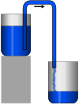

siphoning

Definition: A siphon (from Ancient Greek σίφων (síphōn) 'pipe, tube'; also spelled syphon) is any of a wide variety of devices that involve the flow of liquids through tubes. In a narrower sense, the word refers particularly to a tube in an inverted "U" shape, which causes a liquid to flow upward, above the surface of a reservoir, with no pump, but powered by the fall of the liquid as it flows down the tube under the pull of gravity, then discharging at a level lower than the surface of the reservoir from which it came.
Source: Wikipedia
Wikipedia Page (Something wrong with this association? Let us know.)
Wikidata Page (Something wrong with this association? Let us know.)